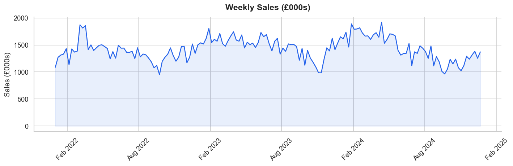
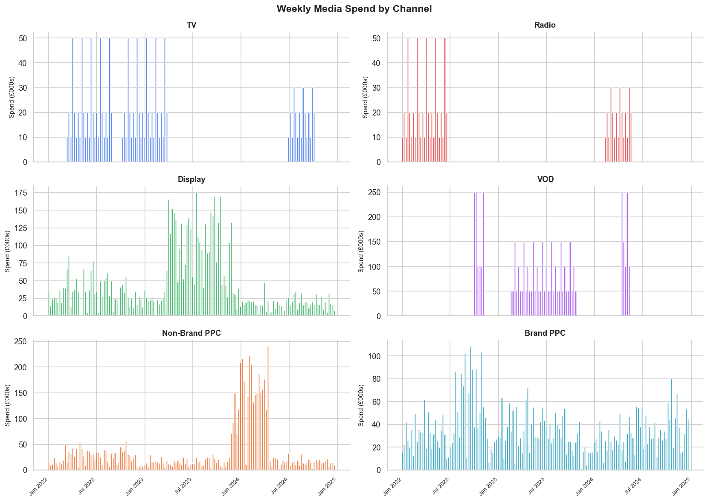
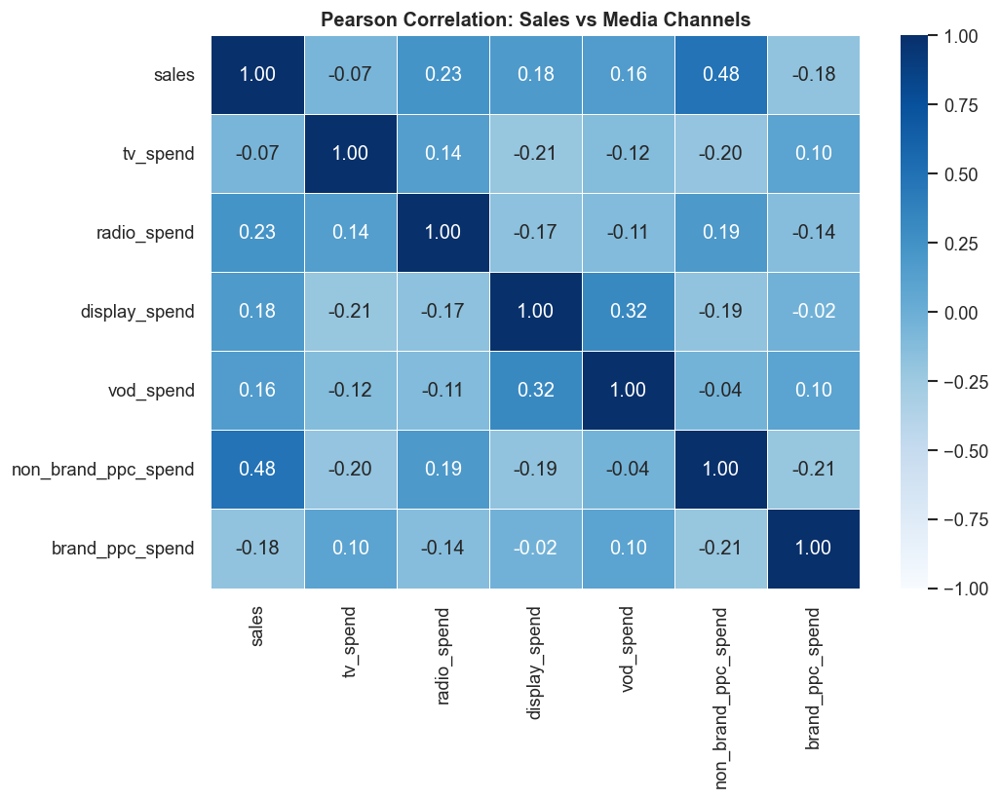
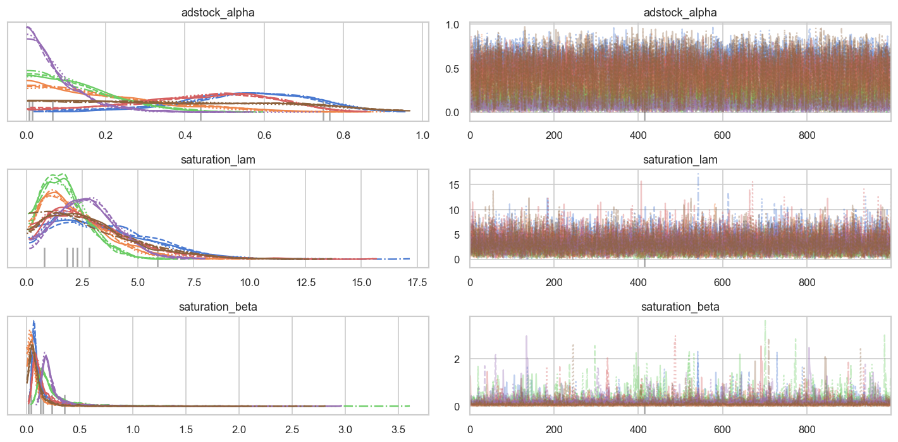
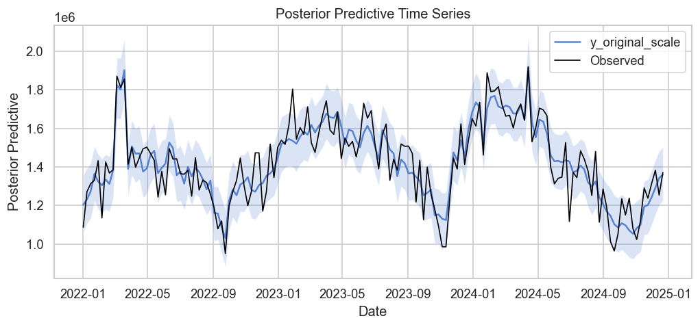
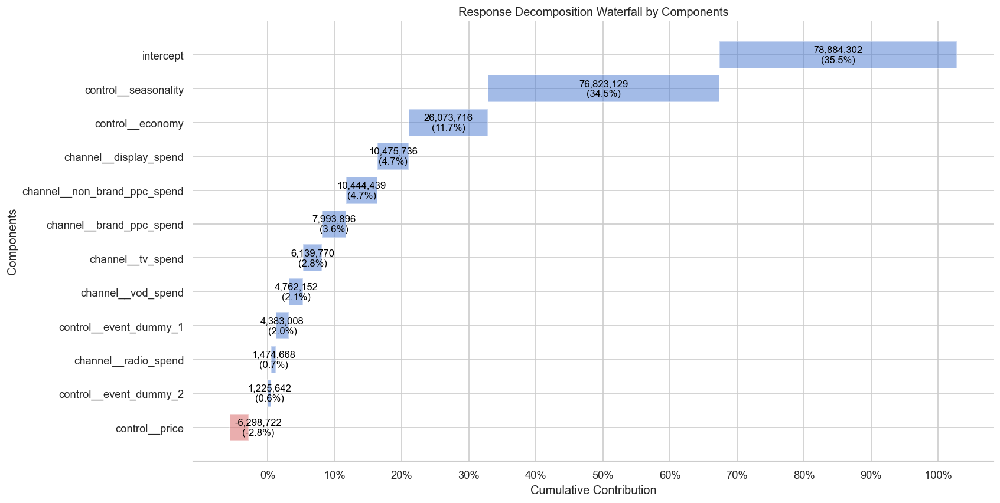
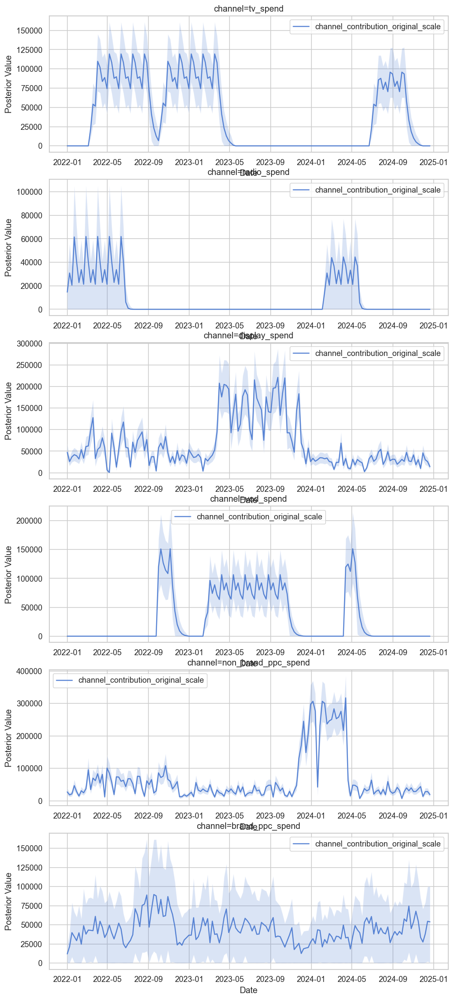
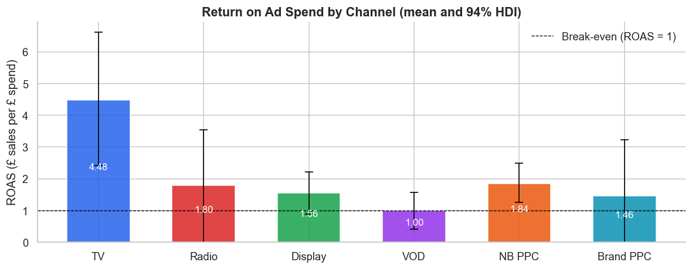
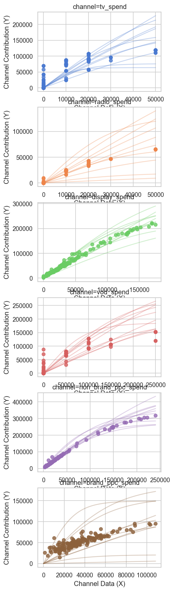
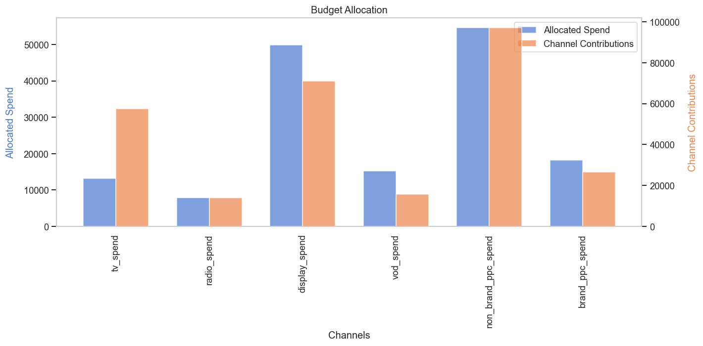

PyMC-Marketing is an open-source Python library for Bayesian Media Mix Modelling (MMM). Built on top of PyMC, it provides ready-built components for the core parts of an MMM: the adstock (carryover) and saturation (diminishing returns) transformations, decomposition, optimisation, and more.
Who is this article for? This article is aimed at anyone who wants to better understand what this software can do. Data scientists and marketing analysts comfortable with Python and basic regression modelling will be able to follow along in Jupyter, but the charts and outputs can be interpreted by any marketing professional.
Who is PyMC-Marketing for? PyMC-Marketing is not a no-code tool: operating it requires people who can write Python, understand Bayesian inference, and interpret model diagnostics. While it is free and easy to run code like the one below, building a model that actually generates value for your brand is not easy, and requires:
What the code covers:
A pros/cons comparison and a full alternatives overview are included at the end.
pip install pymc-marketing matplotlib seaborn numpyro jax
This walkthrough was run with pymc-marketing 0.19.4.
Performance note: We use
nuts_sampler="numpyro", which uses JAX under the hood and is much faster than the default sampler. The full fit (4 chains x 1,000 draws) takes about a minute on a laptop CPU.
We use the MMM class from pymc_marketing.mmm.multidimensional. This is the current model class: the older pymc_marketing.mmm.MMM is deprecated and will be removed in version 0.20, so make sure any tutorial you follow uses the new import.
import warnings
warnings.filterwarnings("ignore")
import numpy as np
import pandas as pd
import xarray as xr
import matplotlib.pyplot as plt
import matplotlib.dates as mdates
import seaborn as sns
import arviz as az
from pymc_marketing.mmm import GeometricAdstock, LogisticSaturation
from pymc_marketing.mmm.multidimensional import MMM, MultiDimensionalBudgetOptimizerWrapper
plt.rcParams["figure.dpi"] = 120
sns.set_theme(style="whitegrid", palette="muted")
We use the same dataset as our Meridian article, which allows a direct comparison between the two frameworks on identical data.
The dataset is publicly available at github.com/linea-analytics/public-data/blob/main/formatted_data_simple.csv.
It covers 156 weeks (Jan 2022 to Dec 2024) with 6 media channels and 5 control variables:
| Type | Columns |
|---|---|
| KPI | sales |
| Media | tv_spend, radio_spend, display_spend, vod_spend, non_brand_ppc_spend, brand_ppc_spend |
| Controls | economy, seasonality, price, event_dummy_1, event_dummy_2 |
df = pd.read_csv("formatted_data_simple.csv")
df["date"] = pd.to_datetime(df["date"], dayfirst=True)
df = df.sort_values("date").reset_index(drop=True)
channel_cols = ["tv_spend", "radio_spend", "display_spend", "vod_spend",
"non_brand_ppc_spend", "brand_ppc_spend"]
control_cols = ["economy", "seasonality", "price", "event_dummy_1", "event_dummy_2"]
n_weeks = len(df)
print(f"Shape: {df.shape}")
print(f"Date range: {df['date'].min().date()} to {df['date'].max().date()}")
print(f"Weeks: {n_weeks}")
df.head()
Shape: (156, 13)
Date range: 2022-01-01 to 2024-12-21
Weeks: 156
A quick check on how often each channel is dark (zero spend) is worth doing before modelling:
# Quick data check: zero-spend weeks per channel
zero_pct = (df[channel_cols] == 0).mean() * 100
spend_summary = df[channel_cols].describe().loc[["mean", "min", "max"]].T
spend_summary["zero_weeks_%"] = zero_pct.values.round(1)
spend_summary.round(0)
| Channel | Mean (£/week) | Min | Max | Zero weeks % |
|---|---|---|---|---|
tv_spend |
8,782 | 0 | 50,000 | 58.0 |
radio_spend |
5,256 | 0 | 50,000 | 74.0 |
display_spend |
43,136 | 0 | 175,635 | 3.0 |
vod_spend |
30,449 | 0 | 250,000 | 70.0 |
non_brand_ppc_spend |
36,394 | 2,451 | 240,499 | 0.0 |
brand_ppc_spend |
34,996 | 1,103 | 108,534 | 0.0 |
TV, radio and VOD are "flighted" channels, dark for most weeks, while display and PPC run almost continuously.
df[["sales"] + channel_cols].describe().round(0)
Weekly sales average around £1.43m, ranging from £0.95m to £1.92m.
Two charts tell most of the story before we fit anything.
# Chart 1: Weekly Sales
fig, ax = plt.subplots(figsize=(12, 4))
ax.plot(df["date"], df["sales"] / 1_000, color="#2563EB", linewidth=1.5)
ax.fill_between(df["date"], df["sales"] / 1_000, alpha=0.10, color="#2563EB")
ax.set_title("Weekly Sales (£000s)", fontsize=14, fontweight="bold", pad=12)
ax.set_ylabel("Sales (£000s)")
ax.xaxis.set_major_formatter(mdates.DateFormatter("%b %Y"))
ax.xaxis.set_major_locator(mdates.MonthLocator(interval=6))
plt.xticks(rotation=45)
sns.despine()
plt.tight_layout()
plt.show()

# Chart 2: Media spend by channel (3x2 grid)
channel_labels = ["TV", "Radio", "Display", "VOD", "Non-Brand PPC", "Brand PPC"]
channel_colors = ["#2563EB", "#DC2626", "#16A34A", "#9333EA", "#EA580C", "#0891B2"]
fig, axes = plt.subplots(3, 2, figsize=(14, 10), sharex=True)
axes = axes.flatten()
for ax, col, label, color in zip(axes, channel_cols, channel_labels, channel_colors):
ax.bar(df["date"], df[col] / 1_000, color=color, alpha=0.75, width=5)
ax.set_title(label, fontsize=11, fontweight="bold")
ax.set_ylabel("Spend (£000s)", fontsize=9)
ax.xaxis.set_major_formatter(mdates.DateFormatter("%b %Y"))
ax.xaxis.set_major_locator(mdates.MonthLocator(interval=6))
plt.setp(ax.get_xticklabels(), rotation=45, ha="right", fontsize=8)
sns.despine(ax=ax)
fig.suptitle("Weekly Media Spend by Channel", fontsize=14, fontweight="bold")
plt.tight_layout()
plt.show()

# Correlation heatmap: media spend vs sales
corr_df = df[["sales"] + channel_cols].corr()
fig, ax = plt.subplots(figsize=(9, 7))
sns.heatmap(
corr_df,
annot=True, fmt=".2f", cmap="Blues",
vmin=-1, vmax=1, linewidths=0.5, ax=ax
)
ax.set_title("Pearson Correlation: Sales vs Media Channels", fontsize=12, fontweight="bold")
plt.tight_layout()
plt.show()

The model includes:
economy: macroeconomic indexseasonality: pre-computed seasonal patternprice: price index (0.5 / 1.0 / 2.5)event_dummy_1, event_dummy_2: promotional event flagsInternally the model scales sales and spend to a 0-1 range. add_original_scale_contribution_variable adds copies of the key outputs back in £, which the plotting and summary functions then use.
X = df[["date"] + channel_cols + control_cols].copy()
y = df["sales"].copy()
mmm = MMM(
date_column="date",
target_column="sales",
channel_columns=channel_cols,
control_columns=control_cols,
adstock=GeometricAdstock(l_max=8),
saturation=LogisticSaturation(),
)
mmm.build_model(X, y)
mmm.add_original_scale_contribution_variable(
var=["channel_contribution", "control_contribution", "intercept_contribution", "y"]
)
print("Free random variables:")
for rv in mmm.model.free_RVs:
print(" ", rv.name)
Free random variables:
intercept_contribution
adstock_alpha
saturation_lam
saturation_beta
gamma_control
y_sigma
These are the key model parameters:
intercept_contribution: baseline salesadstock_alpha: decay rate per channel (0 = no carryover, 1 = infinite)saturation_lam / saturation_beta: saturation curve shape and scale per channelgamma_control: coefficients on the control variablesy_sigma: observation noiseKey design choices:
GeometricAdstock(l_max=8): each week's ad effect can carry forward up to 8 weeks, with a learned decay rate per channelLogisticSaturation(): each channel has its own saturation curve, capturing diminishing returnsNUTS (No-U-Turn Sampler) is used to draw from the posterior via the numpyro backend.
idata = mmm.fit(
X=X,
y=y,
draws=1_000,
tune=1_000,
chains=4,
target_accept=0.90,
nuts_sampler="numpyro",
random_seed=42,
)
Tip: PyMC-Marketing uses NUTS sampling from PyMC, which is the gold standard for Bayesian inference. If you've built models in Stan before, you'll feel at home.
Never skip this step. Bayesian MCMC outputs are meaningless if the chains have not converged.
Values close to 1.0 (< 1.01) indicate the chains have mixed well.
# R-hat summary: values should be < 1.01 for good convergence
summary = az.summary(
idata,
var_names=["adstock_alpha", "saturation_lam", "saturation_beta", "y_sigma"],
)
print(f"Divergences: {int(idata.sample_stats['diverging'].sum())} of 4,000 draws")
summary[["mean", "sd", "r_hat", "ess_bulk"]].round(3)
Divergences: 1 of 4,000 draws
mean sd r_hat ess_bulk
adstock_alpha[tv_spend] 0.550 0.166 1.0 2765.0
adstock_alpha[radio_spend] 0.205 0.163 1.0 3876.0
adstock_alpha[display_spend] 0.133 0.101 1.0 3440.0
adstock_alpha[vod_spend] 0.444 0.174 1.0 2934.0
adstock_alpha[non_brand_ppc_spend] 0.077 0.071 1.0 3527.0
adstock_alpha[brand_ppc_spend] 0.395 0.247 1.0 3268.0
saturation_lam[tv_spend] 3.427 2.127 1.0 1961.0
saturation_lam[radio_spend] 2.243 1.500 1.0 2832.0
saturation_lam[display_spend] 1.764 1.027 1.0 2392.0
saturation_lam[vod_spend] 2.966 2.029 1.0 2194.0
saturation_lam[non_brand_ppc_spend] 2.744 1.306 1.0 1727.0
saturation_lam[brand_ppc_spend] 2.911 2.017 1.0 2957.0
saturation_beta[tv_spend] 0.131 0.148 1.0 1712.0
saturation_beta[radio_spend] 0.073 0.084 1.0 1916.0
saturation_beta[display_spend] 0.260 0.245 1.0 2273.0
saturation_beta[vod_spend] 0.165 0.182 1.0 1887.0
saturation_beta[non_brand_ppc_spend] 0.246 0.177 1.0 1613.0
saturation_beta[brand_ppc_spend] 0.100 0.147 1.0 2055.0
y_sigma 0.049 0.003 1.0 4324.0
Every R-hat is 1.0, effective sample sizes are well above 1,000, and there is a single divergent transition out of 4,000 draws, so the chains have mixed well. TV and VOD show the strongest carryover (alpha around 0.55 and 0.44), while non-brand PPC has almost none (0.08), which is what you would expect from a search channel.
# Trace plots: chains should look like "fuzzy caterpillars" (no drifts, no divergences)
az.plot_trace(
idata,
var_names=["adstock_alpha", "saturation_lam", "saturation_beta"],
compact=True,
)
plt.tight_layout()
plt.show()

Does the model reproduce the observed sales? We sample from the posterior predictive distribution and overlay the actuals.
# Posterior predictive check: does the model reproduce observed sales?
mmm.sample_posterior_predictive(X, extend_idata=True, combined=True)
fig, axes = mmm.plot.posterior_predictive(var=["y_original_scale"])
ax = np.ravel(axes)[0]
ax.plot(df["date"], df["sales"], color="black", linewidth=1, label="Observed")
ax.legend()
plt.show()

The model tracks the trend, the seasonal swings and the spring 2022 spike closely, with most observed weeks inside the credible band.
Once the model has converged, we can decompose total sales into baseline, control, and channel contributions:
# Waterfall decomposition: baseline, controls and each channel's contribution over the full period
mmm.plot.waterfall_components_decomposition()
plt.show()

Over the three years, the baseline (35.5%) and seasonality (34.5%) drive most sales, followed by the economy (11.7%). Paid media together account for about 19%, led by display and non-brand PPC (4.7% each). Price has a negative effect (-2.8%).
# Time-series contributions: how each channel contributed week by week
mmm.plot.contributions_over_time(var=["channel_contribution_original_scale"])
plt.show()

Return on ad spend (ROAS): for every £1 spent on a channel, how much incremental sales does it drive? mmm.summary.roas() computes it over the full period, with a 94% credible interval.
roas = mmm.summary.roas(frequency="all_time").set_index("channel")
roas.columns = ["Mean", "Median", "94% HDI lower", "94% HDI upper"]
roas.round(2)
| Channel | Mean | Median | 94% HDI lower | 94% HDI upper |
|---|---|---|---|---|
| TV | 4.48 | 4.49 | 2.42 | 6.61 |
| Radio | 1.80 | 1.71 | 0.00 | 3.55 |
| Display | 1.56 | 1.54 | 0.89 | 2.21 |
| VOD | 1.00 | 0.99 | 0.41 | 1.58 |
| Non-Brand PPC | 1.84 | 1.82 | 1.26 | 2.50 |
| Brand PPC | 1.46 | 1.24 | 0.00 | 3.23 |
TV delivers by far the highest ROAS (4.48) on a relatively small budget, and its interval sits well above break-even. VOD only just breaks even. Radio and brand PPC have wide intervals that reach zero, so the data can't rule out that they add very little.
channel_labels_short = ["TV", "Radio", "Display", "VOD", "NB PPC", "Brand PPC"]
channel_colors_6 = ["#2563EB", "#DC2626", "#16A34A", "#9333EA", "#EA580C", "#0891B2"]
fig, ax = plt.subplots(figsize=(10, 4))
bars = ax.bar(channel_labels_short, roas["Mean"], color=channel_colors_6, alpha=0.85, width=0.6)
ax.errorbar(
channel_labels_short, roas["Mean"],
yerr=[roas["Mean"] - roas["94% HDI lower"], roas["94% HDI upper"] - roas["Mean"]],
fmt="none", ecolor="black", elinewidth=1, capsize=4,
)
ax.axhline(1.0, color="black", linestyle="--", linewidth=0.8, label="Break-even (ROAS = 1)")
ax.bar_label(bars, fmt="%.2f", padding=4, fontsize=10, label_type="center", color="white")
ax.set_ylabel("ROAS (£ sales per £ spend)")
ax.set_title("Return on Ad Spend by Channel (mean and 94% HDI)", fontsize=13, fontweight="bold")
ax.legend(frameon=False)
sns.despine()
plt.tight_layout()
plt.show()

Response curves show the marginal return at different spend levels, which is crucial for understanding where each channel sits on its saturation curve. Dots are the observed weeks.
curve = mmm.sample_saturation_curve(original_scale=False)
mmm.plot.saturation_curves(curve=curve, original_scale=True)
plt.show()

Steep portions of the curve = high marginal return. Flat portions = diminishing returns territory.
Knowing ROAS by channel is useful; knowing the optimal allocation of a fixed budget is actionable. The budget optimiser finds the weekly spend per channel that maximises expected media contribution, for a fixed total budget.
MultiDimensionalBudgetOptimizerWrapper sets up the planning window. Note that budget is the spend per week, not the total over the window.
weekly_spend = df[channel_cols].mean() # historical £/week per channel
start_date = df["date"].max() + pd.Timedelta(weeks=1)
end_date = df["date"].max() + pd.Timedelta(weeks=52)
optimizer = MultiDimensionalBudgetOptimizerWrapper(
model=mmm,
start_date=start_date.strftime("%Y-%m-%d"),
end_date=end_date.strftime("%Y-%m-%d"),
)
budget_bounds = xr.DataArray(
np.column_stack([0.5 * weekly_spend, 1.5 * weekly_spend]),
dims=["channel", "bound"],
coords={"channel": channel_cols, "bound": ["lower", "upper"]},
)
optimal_budgets, res = optimizer.optimize_budget(
budget=weekly_spend.sum(),
budget_bounds=budget_bounds,
)
print(f"Optimisation success: {res.success} | {res.message}\n")
allocation = pd.DataFrame({
"Current (£/week)": weekly_spend,
"Optimal (£/week)": optimal_budgets.to_series(),
})
allocation["Change"] = (allocation["Optimal (£/week)"] / allocation["Current (£/week)"] - 1).map("{:+.0%}".format)
allocation.round(0)
| Channel | Current (£/week) | Optimal (£/week) | Change |
|---|---|---|---|
| TV | 8,782 | 13,173 | +50% |
| Radio | 5,256 | 7,885 | +50% |
| Display | 43,136 | 49,910 | +16% |
| VOD | 30,449 | 15,224 | -50% |
| Non-Brand PPC | 36,394 | 54,591 | +50% |
| Brand PPC | 34,996 | 18,230 | -48% |
The optimiser moves money out of VOD and brand PPC, the two channels with the weakest returns, and into TV, radio and non-brand PPC, pushing three of them to their +50% cap.
To see what the reallocation is worth, we simulate the planning window under both allocations and compare the expected media contribution:
current_budgets = xr.DataArray(weekly_spend.values, dims=["channel"], coords={"channel": channel_cols})
response_current = optimizer.sample_response_distribution(allocation_strategy=current_budgets)
response_optimal = optimizer.sample_response_distribution(allocation_strategy=optimal_budgets)
contrib_current = float(response_current["total_media_contribution_original_scale"].mean())
contrib_optimal = float(response_optimal["total_media_contribution_original_scale"].mean())
print(f"Media contribution over 52 weeks, current split: £{contrib_current:,.0f}")
print(f"Media contribution over 52 weeks, optimal split: £{contrib_optimal:,.0f}")
print(f"Uplift from reallocation, same total spend: {contrib_optimal / contrib_current - 1:+.1%}")
Media contribution over 52 weeks, current split: £15,305,967
Media contribution over 52 weeks, optimal split: £16,901,569
Uplift from reallocation, same total spend: +10.4%
Same money, about £1.6m more media-driven sales over a year. That's the kind of output that makes an MMM actionable, although with the bounds this tight, the result mostly says "move towards the caps", and a real plan would test wider bounds and sense-check them against what the channels can actually absorb.
# Optimal weekly spend per channel vs the expected weekly contribution it drives
mmm.plot.budget_allocation(
samples=response_optimal,
scale_factor=float(mmm.idata.constant_data["target_scale"]),
)
plt.show()

| Step | What we did |
|---|---|
| Data | Loaded 156 weeks of sales and media spend (Jan 2022 to Dec 2024) |
| EDA | Visualised sales, all 6 media channels, and correlations |
| Model | 6 channels with geometric adstock + logistic saturation, 5 control variables |
| Fit | NUTS via numpyro (4 chains x 1,000 draws) |
| Diagnostics | R-hat, trace plots, posterior predictive check |
| Outputs | Sales decomposition, ROAS by channel, response curves |
| Optimisation | Optimal weekly budget split via MultiDimensionalBudgetOptimizerWrapper, compared against the current split |
Pros
Cons
BudgetOptimizer or building custom logic on top of it.| Approach | Best suited when |
|---|---|
| Similar open-source libraries (Meridian, Robyn) | Broadly similar pros and cons to PyMC-Marketing. Meridian integrates tightly with Google media; Robyn uses a different estimation engine. Choice often comes down to team familiarity. |
| Custom-built PyMC or Stan | Your team has deep MMM expertise and needs full control over model structure, priors, and custom scenarios. Not suitable for generalist data scientists without strong statistical backgrounds. |
| Modelling UIs | Getting started quickly with simple, repeatable models. Limited flexibility and you do not own the methodology. Not suitable if you need custom scenarios or full transparency. |
| Automated modelling platforms | Budgets under £500k and digital-only spend, where a fast, low-cost estimate is acceptable. Models tend to be less sophisticated. |
| Agency-led measurement | Independent measurement is a priority, particularly for large or multi-market campaigns. |
| Linea | We offer three options: (1) open-source in-house implementation where your team runs the models; (2) custom-built in-house implementation tailored to your business; (3) project-based measurement where we run the analysis end-to-end. |
For questions or to share your results, find us on the PyMC-Marketing GitHub.
Have any project on mind?
For immediate support: